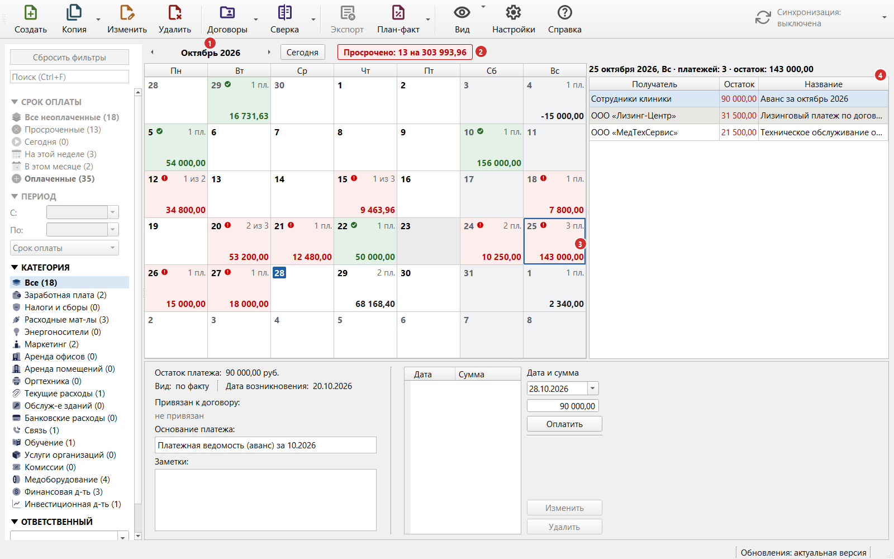

Раздел 2. Главное окно |
Здесь описано, как читать таблицу платежей; работа с платежами и фильтрами — в разделах 3–5.
Из чего состоит окно |
Рис. 3. Главное окно: 1 — панель инструментов; 2 — поле поиска; 3 — кнопка синхронизации; 4 — боковая панель; 5 — таблица платежей; 6 — панель сведений; 7 — строка состояния.
Панель инструментов |
Пять кнопок открывают меню: у «Копии», «Договоров», «Сверки» и «План-факта» — по стрелке справа (сама кнопка выполняет главную команду), у «Вида» — по нажатию.
| Кнопка | Что делает | Горячая клавиша | Подробнее |
|---|---|---|---|
| «Создать» | Команда «Новый платеж» | Ctrl+N | Раздел 3 |
| «Копия» | Кнопка — «Копировать платеж»; в меню по стрелке ещё «Копировать платеж с новым основанием» | Ctrl+D, Ctrl+Shift+D | Раздел 3 |
| «Изменить» | Команда «Редактировать платеж» | F2 или двойной щелчок по строке | Раздел 3 |
| «Удалить» | Команда «Удалить платеж» | Del | Раздел 3 |
| «Договоры» | Кнопка — «Контрагенты и договоры»; в меню по стрелке ещё «Ежемесячные платежи» | Ctrl+K, Ctrl+Shift+K | Разделы 6 и 8 |
| «Сверка» | Кнопка — «Сверить выписку». В меню по стрелке: «Сверить выписку», «Учет комиссий» | Разделы 9 и 10 | |
| «Экспорт» | Выгрузка таблицы в файл | Ctrl+E | Раздел 11 |
| «План-факт» | Кнопка — «Исполнение финансового плана»; в меню ещё «Финансовый план» и «Графики» | Ctrl+P, Ctrl+Shift+P, Ctrl+G | Раздел 12 |
| «Вид» | Переключатель «Таблица» / «Календарь», затем три выключателя: «На контроле» (только платежи со звёздочкой), «Заголовки разделов» и «Итого по разделам» (последние два включены по умолчанию). Пока включено «На контроле», кнопка подсвечена | Ctrl+T (таблица ↔ календарь) | Раздел 5; календарь — ниже |
| «Настройки» | Окно настроек | Ctrl+, (Ctrl и запятая) | Раздел 13 |
| «Справка» | Это руководство. Слева содержание, справа текст раздела | F1 | Раздел 0 |

Рис. 4. Панель инструментов. Меню раскрываются у кнопок: 1 — «Копия» (по стрелке), 2 — «Договоры» (по стрелке), 3 — «Сверка» (по стрелке), 4 — «План-факт» (по стрелке), 5 — «Вид».

Рис. 5. Меню кнопок. В меню «Вид» включённые пункты обведены рамкой вокруг значка.
Кнопка синхронизации показывает состояние; меню по стрелке: «Синхронизировать сейчас», «Отказаться от моих изменений…», «Настройки синхронизации…» (раздел 15).
Все горячие клавиши собраны в приложении 3.
Боковая панель |
Кнопка «Сбросить фильтры» (Ctrl+R), поиск (Ctrl+F) и группы фильтров: «СРОК ОПЛАТЫ», «ПЕРИОД», «КАТЕГОРИЯ», «ОТВЕТСТВЕННЫЙ», флажок «ОПЛАТА СЕГОДНЯ». Подробнее — в разделе 5.
Таблица платежей |
Платежи сгруппированы по категориям, а категории — по разделам. Порядок разделов и подразделов фиксирован (по номерам: «1. Текущая деятельность», «1.1», «1.2»…), внутри подраздела платежи по умолчанию идут по сроку оплаты: сверху самый ранний.
Щелчок по заголовку столбца сортирует платежи внутри каждого подраздела; повторный щелчок меняет порядок.
Раздел — крупная группа платежей («Текущая деятельность»), подраздел — её часть («Услуги связи»).

Рис. 6. Фрагмент таблицы. 1 — заголовок раздела; 2 — заголовок подраздела; 3 — платеж со сроком сегодня; 4 — просроченные платежи; 5 — итог подраздела; 6 — итог раздела. Светло-голубым выделен выбранный платеж.
Пункт «Заголовки разделов» убирает эти строки. Заголовки не показываются также при выбранной категории и при поиске.
Итоги — «Всего по 1.12.» (подраздел), «Всего по 1.» (раздел) и «ВСЕГО» — складывают остаток платежа, сумму платежа и оплату сегодня только по платежам, видимым в таблице.
Цвета зависят от срока оплаты и остатка:
| Как выглядит строка | Что означает |
|---|---|
| Красный текст | Платеж просрочен: срок оплаты раньше сегодняшнего дня, а платеж считается неоплаченным |
| Полужирный текст | Срок оплаты сегодня, а платеж считается неоплаченным |
| Обычный текст | Срок оплаты ещё не наступил |
| Светло-голубая заливка | Платеж выбран, это не цвет срока |
| Цветная заливка строки с названием раздела или подраздела | Заголовок |
| Цветная заливка строки «Всего по …» | Итог |
Платеж, полностью оплаченный сегодня, до конца дня считается неоплаченным и сохраняет цвет по сроку оплаты (раздел 4).
Цвета и шрифт меняются в «Настройки» → «Отображение».
|
⚠️ Внимание. При фильтре «Просроченные» или «Сегодня» (и флажке «ОПЛАТА СЕГОДНЯ») соответствующая подсветка отключается: просроченные платежи не будут красными. |
| Столбец | Что показывает |
|---|---|
| Получатель платежа | Кому платим |
| Наименование (предмет) платежа | За что платим |
| Остаток платежа | Сумма платежа минус все оплаты |
| Последняя оплата | Дата последней оплаты. Показывается на месте столбца «Остаток платежа», пока выбран пункт «Оплаченные» (раздел 5) |
| Сумма платежа | Полная сумма платежа |
| Срок оплаты | Дата, к которой нужно заплатить |
| Дата возникновения | Дата события, от которого считается срок (например, дата счёта) |
| Вид платежа | «По факту», «предоплата» или «возврат» (раздел 3) |
| Основание платежа | Документ, например «Счет № 15 от 04.10.2026» |
| Ответственный | Сотрудник |
| Оплата сегодня | Сумма оплат, внесённых сегодняшним числом |
| ★ | Отметка «На контроле» |
| 🔒 | Отметка «Скрытый платеж» |
Столбцы «Общая сумма платежа», «Основание платежа», «Ответственный», «Вид платежа» и «Дата возникновения» можно отключить: «Настройки» → «Таблица» → «Данные в основной таблице».

Рис. 7. Правая часть той же таблицы. 1 — скрепка (платеж привязан к договору); 2 — отметка «На контроле»; 3 — отметка «Скрытый платеж».
Команды платежа доступны и по правой кнопке мыши.

Рис. 8. Контекстное меню строки платежа.
| Команда | Что делает | Горячие клавиши |
|---|---|---|
| «Новый платеж» | Новый платеж | Ctrl+N |
| «Копировать платеж» | Новый платеж с данными выбранного | Ctrl+D |
| «Копировать платеж с новым основанием» | Новый платеж по тому же документу договора | Ctrl+Shift+D |
| «Редактировать платеж» | Изменение платежа | F2 или двойной щелчок |
| «Удалить платеж» | Удаление платежа | Del |
| «Перейти к договору» | Документ договора, к которому привязан платеж | — |
| «История платежей» | Платежи и оплаты по документу договора, к которому привязан платеж (раздел 6) | — |
| «История изменений» | Кто, когда и что менял в платеже и его оплатах (раздел 4) | Ctrl+Shift+H |
«Копировать платеж с новым основанием», «Перейти к договору» и «История платежей» доступны только для платежа, привязанного к документу договора; первая — не для возврата (раздел 3).
Календарь вместо таблицы |
Платежи можно показать на месячной сетке: «Вид» → «Календарь» (обратно — «Таблица»; переключение — Ctrl+T). Платежи те же, но разложены по сроку оплаты: сразу видно, в какие дни много платежей и где просрочки. Не путайте с настройками «Календарь» (праздники и переносы выходных, раздел 7).

Рис. 10. Вид «Календарь»: 1 — месяц (по щелчку открывается список месяцев и соседних годов); 2 — просроченные платежи; 3 — выбранный день; 4 — платежи выбранного дня. Внизу панель сведений выбранного платежа.
Что показывает ячейка дня:
| В ячейке | Что означает |
|---|---|
| Красная заливка, красная сумма | В этот день срок оплаты уже прошёл, а остаток есть: платежи просрочены |
| Зелёная заливка и галочка | Все платежи дня оплачены |
| Серая заливка | Нерабочий день по календарю программы (раздел 7) |
| Число на синем фоне | Сегодня |
| «3 пл.» или «1 из 3» | Сколько платежей со сроком в этот день; «1 из 3» — не оплачен один из трёх |
| Сумма внизу | Остаток платежей дня; в полностью оплаченном дне — сумма платежей, а у возврата она отрицательная |
Справа — платежи выбранного дня: по остатку от большего к меньшему, оплаченные внизу серым. Платеж, выбранный в списке, показывается в панели сведений, а команды «Изменить», «Копия» и «Удалить» работают с ним, как в таблице; двойной щелчок или Enter открывает платеж на редактирование.
|
⚠️ Внимание. В календаре не действуют фильтры «СРОК ОПЛАТЫ» и «ПЕРИОД»: их заголовки на боковой панели серые, а оплаченные платежи видны всегда (иначе сетка показывала бы только один срок). Остальные фильтры и поиск, а также «На контроле», работают. «Экспорт» в календаре недоступен: вернитесь в таблицу. |
Панель сведений |

Рис. 9. Панель сведений. 1 — сведения о платеже и заметки; 2 — история оплат; 3 — блок внесения оплаты.
Панель состоит из трёх частей.
Сведения о платеже (1):
| Поле | Что показывает |
|---|---|
| Остаток платежа | Сколько осталось заплатить |
| Вид | «по факту», «предоплата» или «возврат» |
| Дата возникновения | Дата события, от которого считается срок оплаты |
| Привязан к договору | Ссылка на документ договора вида «№ М-31/2025 от 10.06.2025 · Акт» или серое «не привязан» |
| Основание платежа | Только для чтения; изменить — через «Редактировать платеж» (раздел 3) |
| Заметки | Ваш текст о платеже |
Заметку можно писать прямо в панели; она сохраняется сама, когда вы переходите в другое поле или выбираете другой платеж (можно и сразу, Ctrl+S).
История оплат (2): оплаты платежа с датой и суммой.
Внесение оплаты (3): дата, сумма, кнопки «Оплатить», «Изменить» и «Удалить»; по умолчанию — сегодня и остаток платежа (раздел 4).
Строка состояния |
| Надпись | Что означает |
|---|---|
| «Последняя синхронизация: 14:35» | Когда синхронизация в последний раз прошла успешно. Для прошлых дней добавляется дата. Надпись есть только при включённой синхронизации |
| «Резервная копия: ОШИБКА СОЗДАНИЯ» (красная) | При запуске не удалось сохранить резервную копию (раздел 14) |
| «Обновления: актуальная версия» | Установлена последняя версия |
| «Обновления: доступна 2026.11.02» (с номером новой версии) | Вышла новая версия (раздел 16) |
| «Обновления: ошибка» | Не удалось проверить (например, нет интернета) |
| «Обновления: отключены» | Проверка обновлений выключена |
Слева на несколько секунд может появиться сообщение «Не удалось связаться с сервером синхронизации. Повторим попытку через … с (осталось попыток: …)»: программа повторит синхронизацию сама.
Если что-то пошло не так |
| Что вы видите | Что случилось | Что делать |
|---|---|---|
| Сообщение «Выбранный платеж больше не отображается в таблице - вероятно, изменились условия фильтрации. Выберите платеж заново.» | Вы запустили команду для платежа (например, «Копировать платеж»), но платеж уже скрыт фильтром или поиском | Измените фильтры или сбросите их (Ctrl+R), выберите платеж и повторите команду |
| Таблица пуста, видна надпись «Нет платежей, подходящих под условия фильтрации и поиска» | Фильтры или поиск оставили ноль платежей | «Сбросить фильтры» |
| Платежа нет в таблице, хотя вы его вносили | Он оплачен, а по умолчанию показаны только неоплаченные | Включите пункт «Оплаченные» в группе «СРОК ОПЛАТЫ» (раздел 5) |
| Вы только что полностью оплатили платеж, но в «Оплаченных» его нет, а в «Все неоплаченные» он остался (остаток пустой) | Платеж, оплаченный сегодня, до конца дня считается неоплаченным. В «Оплаченные» он перейдёт завтра | Найдите его сегодня в «Все неоплаченные» или включите флажок «ОПЛАТА СЕГОДНЯ». Это нормально, ошибки нет |